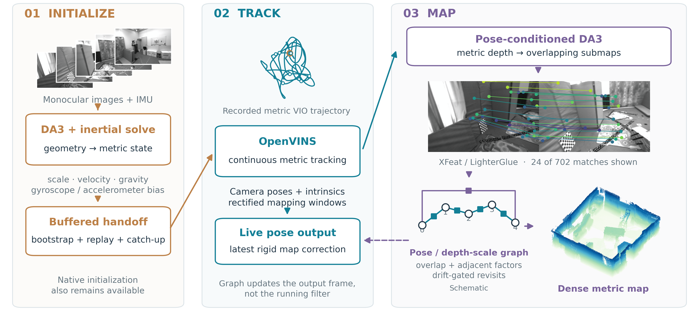

Dense monocular–inertial SLAM with feed-forward initialization and pose-conditioned mapping: one camera, one IMU, and a metric dense map built while you walk.
Interactive
Each is the run's own fused output, thinned for the browser. Drag to orbit, scroll to zoom, right-drag to pan. The tube is the trajectory, blue at the start to red at the end.
EuRoC is a monochrome dataset, so its map is grey — that is the sensor, not the method. The phone walk was recorded with no calibration at all.
Your own data
212 seconds along a beach promenade, recorded with a phone held in portrait: intrinsics from the lens spec, no camera–IMU calibration, placeholder IMU noise.
Method

Citation
@inproceedings{davio,
title = {DAVIO: Dense Monocular--Inertial SLAM with Feed-Forward
Initialization and Pose-Conditioned Mapping},
year = {2026}
}